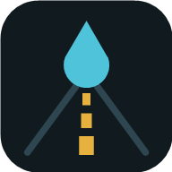

Saigon Now
ルート検索
市内6エリア
--:--
更新
日本語
Tiếng Việt
English
出発
行き先
検索
上の検索欄で探して選ぶか、GoogleマップのURLを貼るか、地図を押して選んでください。この端末だけに保存します。
現在地にする
登録を消す
やめる
いまの状況
読み込み中…
読み込み中…
雨雲レーダー
Windyで見る ↗
小雨
雨
強い雨
激しい雨
▶
ルート全体
周辺30km
Googleマップの渋滞表示 ↗
いまの天気
読み込み中…
これから12時間の雨
棒の高さ＝雨の確率
濃いほど雨量が多い
通勤・帰宅ラッシュ
読み込み中…
いまの移動の目安
読み込み中…
ライブカメラ
地図（カメラ番号・雨雲）
雨雲レーダー
Googleマップの渋滞表示で開く ↗
読み込み中…
閉じる
← 前のカメラ
次のカメラ →